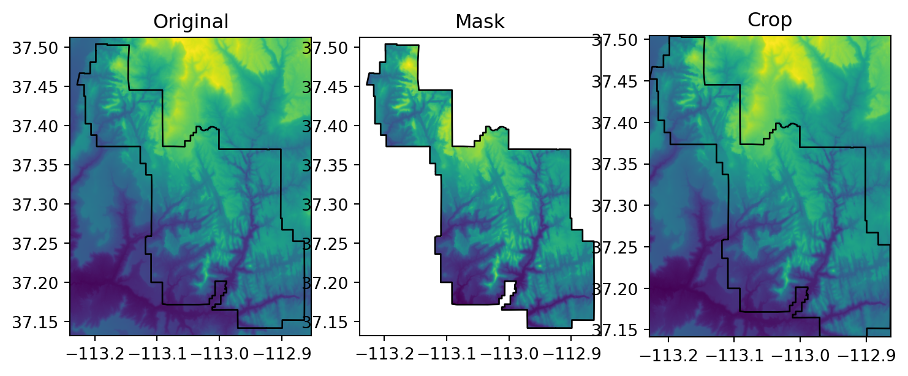
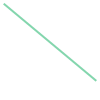
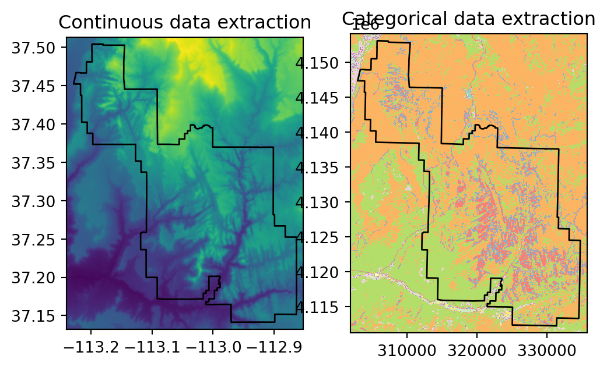
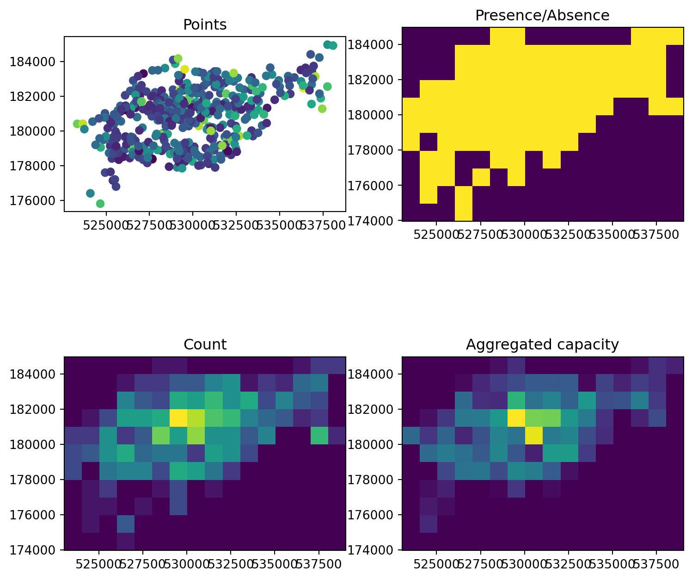
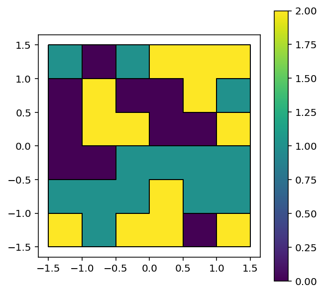

import numpy as np
import shapely.geometry
import matplotlib.pyplot as plt
import geopandas as gpd
import rasterio
import rasterio.mask
import rasterstats
import rasterio.plot
import math
import os5 Raster-vector interactions
5.1 Prerequisites
Let’s import the required packages:
and load the sample data:
src_srtm = rasterio.open('data/srtm.tif')
src_nlcd = rasterio.open('data/nlcd.tif')
src_grain = rasterio.open('data/grain.tif')
src_elev = rasterio.open('data/elev.tif')
src_dem = rasterio.open('data/dem.tif')
zion = gpd.read_file('data/zion.gpkg')
zion_points = gpd.read_file('data/zion_points.gpkg')
cycle_hire_osm = gpd.read_file('data/cycle_hire_osm.gpkg')
us_states = gpd.read_file('data/us_states.gpkg')5.2 Introduction
This Chapter focuses on interactions between raster and vector geographic data models, introduced in Chapter Chapter 1. It includes four main techniques: raster cropping and masking using vector objects (Section Section 5.3); extracting raster values using different types of vector data (Section Section 5.4); and raster-vector conversion (Section 5.5 and Section 5.6). The above concepts are demonstrated using data used in previous chapters to understand their potential real-world applications.
5.3 Raster cropping
Many geographic data projects involve integrating data from many different sources, such as remote sensing images (rasters) and administrative boundaries (vectors). Often the extent of input raster datasets is larger than the area of interest. In this case raster cropping and masking are useful for unifying the spatial extent of input data. Both operations reduce object memory use and associated computational resources for subsequent analysis steps, and may be a necessary preprocessing step before creating attractive maps involving raster data.
We will use two objects to illustrate raster cropping:
- The
srtm.tifraster representing elevation (meters above sea level) in south-western Utah - The
zion.gpkgvector layer representing the Zion National Park
Both target and cropping objects must have the same projection. The following reprojects the vector layer zion into the CRS of the raster src_srtm:
zion = zion.to_crs(src_srtm.crs)To mask the image, i.e., convert all pixels which do not intersect with the zion polygon to “No Data”, we use the rasterio.mask.mask function as follows:
out_image_mask, out_transform_mask = rasterio.mask.mask(
src_srtm,
zion['geometry'],
crop=False,
nodata=9999
)Note that we need to specify a “No Data” value in agreement with the raster data type. Since srtm.tif is of type uint16, we choose 9999 (a positive integer that is guaranteed not to occur in the raster).
The result is the out_image array with the masked values:
out_image_maskarray([[[9999, 9999, 9999, ..., 9999, 9999, 9999],
[9999, 9999, 9999, ..., 9999, 9999, 9999],
[9999, 9999, 9999, ..., 9999, 9999, 9999],
...,
[9999, 9999, 9999, ..., 9999, 9999, 9999],
[9999, 9999, 9999, ..., 9999, 9999, 9999],
[9999, 9999, 9999, ..., 9999, 9999, 9999]]], dtype=uint16)and the new out_transform:
out_transform_maskAffine(0.0008333333332777796, 0.0, -113.23958321278403,
0.0, -0.0008333333332777843, 37.512916763165805)Note that masking (without cropping!) does not modify the raster spatial configuration. Therefore, the new transform is identical to the original:
src_srtm.transformAffine(0.0008333333332777796, 0.0, -113.23958321278403,
0.0, -0.0008333333332777843, 37.512916763165805)Unfortunately, the out_image and out_transform object do not contain any information indicating that 9999 represents “No Data”. To associate the information with the raster, we must write it to file along with the corresponding metadata. For example, to write the cropped raster to file, we need to modify the “No Data” setting in the metadata:
out_meta = src_srtm.meta
out_meta.update(nodata=9999)
out_meta{'driver': 'GTiff',
'dtype': 'uint16',
'nodata': 9999,
'width': 465,
'height': 457,
'count': 1,
'crs': CRS.from_epsg(4326),
'transform': Affine(0.0008333333332777796, 0.0, -113.23958321278403,
0.0, -0.0008333333332777843, 37.512916763165805)}Then we can write the cropped raster to file:
new_dataset = rasterio.open('output/srtm_masked.tif', 'w', **out_meta)
new_dataset.write(out_image_mask)
new_dataset.close()Now we can re-import the raster:
src_srtm_mask = rasterio.open('output/srtm_masked.tif')The .meta property contains the nodata entry. Now, any relevant operation (such as plotting) will take “No Data” into account:
src_srtm_mask.meta{'driver': 'GTiff',
'dtype': 'uint16',
'nodata': 9999.0,
'width': 465,
'height': 457,
'count': 1,
'crs': CRS.from_epsg(4326),
'transform': Affine(0.0008333333332777796, 0.0, -113.23958321278403,
0.0, -0.0008333333332777843, 37.512916763165805)}Cropping means reducing the raster extent to the extent of the vector layer:
- To crop and mask, we can use the same in
rasterio.mask.maskexpression shown above for masking, just settingcrop=Trueinstead ofcrop=False. - To just crop, without masking, we can derive the extent polygon and then crop using it.
For example, here is how we can obtain the extent polygon of zion, as a shapely geometry object:
bb = zion.unary_union.envelope
bb
The extent can now be used for masking. Here, we are also using the all_touched=True option so that pixels partially overlapping with the extent are included:
out_image_crop, out_transform_crop = rasterio.mask.mask(
src_srtm,
[bb],
crop=True,
all_touched=True,
nodata=9999
)Figure 5.1 shows the original raster, and the cropped and masked results.
fig, axes = plt.subplots(ncols=3, figsize=(9,5))
rasterio.plot.show(src_srtm, ax=axes[0])
zion.plot(ax=axes[0], color='none', edgecolor='black')
rasterio.plot.show(src_srtm_mask, ax=axes[1])
zion.plot(ax=axes[1], color='none', edgecolor='black')
rasterio.plot.show(out_image_crop, transform=out_transform_crop, ax=axes[2])
zion.plot(ax=axes[2], color='none', edgecolor='black')
axes[0].set_title('Original')
axes[1].set_title('Mask')
axes[2].set_title('Crop');
5.4 Raster extraction
Raster extraction is the process of identifying and returning the values associated with a ‘target’ raster at specific locations, based on a (typically vector) geographic ‘selector’ object. The reverse of raster extraction — assigning raster cell values based on vector objects — is rasterization, described in Section 5.5.
In the following examples, we use a third-party package called rasterstats, which is specifically aimed at extracting raster values:
- to points, via the
rasterstats.point_queryfunction, or - to polygons, via the
rasterstats.zonal_statsfunction.
5.4.1 Extraction to points
The basic example is of extracting the value of a raster cell at specific points. For this purpose, we will use zion_points, which contain a sample of 30 locations within the Zion National Park (Figure …). The following expression extracts elevation values from srtm:
result = rasterstats.point_query(
zion_points,
src_srtm.read(1),
nodata = src_srtm.nodata,
affine = src_srtm.transform,
interpolate='nearest'
)The resulting object is a list of raster values, corresponding to zion_points:
result[:5][1802, 2433, 1886, 1370, 1452]To create a DataFrame with points’ IDs (one value per vector’s row) and related srtm values for each point, we need to assign it:
zion_points['elev'] = result
zion_points| geometry | elev | |
|---|---|---|
| 0 | POINT (-112.91587 37.20013) | 1802 |
| 1 | POINT (-113.09369 37.39263) | 2433 |
| 2 | POINT (-113.02462 37.33466) | 1886 |
| ... | ... | ... |
| 27 | POINT (-113.03655 37.23446) | 1372 |
| 28 | POINT (-113.13933 37.39004) | 1905 |
| 29 | POINT (-113.09677 37.24237) | 1574 |
30 rows × 2 columns
5.4.2 Extraction to lines
Raster extraction is also applicable with line selectors. The typical line extraction algorithm is to extract one value for each raster cell touched by a line. However, this particular approach is not recommended to obtain values along the transects, as it is hard to get the correct distance between each pair of extracted raster values.
For line extraction, a better approach is to split the line into many points (at equal distances along the line) and then extract the values for these points. To demonstrate this, the code below creates zion_transect, a straight line going from northwest to southeast of the Zion National Park (see Section 1.2 for a recap on the vector data model):
coords = [[-113.2, 37.45], [-112.9, 37.2]]
zion_transect = shapely.geometry.LineString(coords)
zion_transect
Here is a printout demonstrating that this is a "LineString" geometry representing a straight line between two points:
print(zion_transect)LINESTRING (-113.2 37.45, -112.9 37.2)The line is illustrated in the context of the raster in Figure 5.2.
The utility of extracting heights from a linear selector is illustrated by imagining that you are planning a hike. The method demonstrated below provides an ‘elevation profile’ of the route (the line does not need to be straight), useful for estimating how long it will take due to long climbs.
First, we need to create a layer zion_transect_pnt consisting of points along our line (zion_transect), at specified intervals (distance_delta). To do that, we need to transform the line into a projected CRS (so that we work with true distances, in \(m\)), such as UTM. This requires going through a GeoSeries, as shapely geometries have no CRS definition nor concept of reprojection (see Section 1.2.6):
zion_transect_utm = gpd.GeoSeries(zion_transect, crs=4326)
zion_transect_utm = zion_transect_utm.to_crs(32612)
zion_transect_utm = zion_transect_utm.iloc[0]The printout of the new geometry shows this is still a straight line between two points, only with coordinates in a different CRS:
print(zion_transect_utm)LINESTRING (305399.67208180577 4147066.650206682, 331380.8917453843 4118750.0947884847)Then, we calculate the distances, along the line, where points are going to be generated, using np.arange. This is a numeric sequence starting at 0, going up to line .length, in steps of 250 (\(m\)):
distances = np.arange(0, zion_transect_utm.length, 250)
distances[:7] ## First 7 distance cutoff pointsarray([ 0., 250., 500., 750., 1000., 1250., 1500.])The distances cutoffs are used to sample (“interpolate”) points along the line. The shapely method line.interpolate(d) is used to generate the points. The points are then reproject back to the CRS of the raster:
zion_transect_pnt = [zion_transect_utm.interpolate(distance) for distance in distances]
zion_transect_pnt = gpd.GeoSeries(zion_transect_pnt, crs=32612)
zion_transect_pnt = zion_transect_pnt.to_crs(4326)
zion_transect_pnt0 POINT (-113.20000 37.45000)
1 POINT (-113.19804 37.44838)
2 POINT (-113.19608 37.44675)
...
151 POINT (-112.90529 37.20443)
152 POINT (-112.90334 37.20280)
153 POINT (-112.90140 37.20117)
Length: 154, dtype: geometrySecond, we extract elevation values for each point in our transects and combine this information with zion_transect_pnt (after “promoting” it to a GeoDataFrame, to accomodate extra attributes), using the point extraction method shown earlier (Section 5.4.1). We also attach the respective distance cutoff points distances:
result = rasterstats.point_query(
zion_transect_pnt,
src_srtm.read(1),
nodata = src_srtm.nodata,
affine = src_srtm.transform,
interpolate='nearest'
)
zion_transect_pnt = gpd.GeoDataFrame(geometry=zion_transect_pnt)
zion_transect_pnt['dist'] = distances
zion_transect_pnt['elev'] = result
zion_transect_pnt| geometry | dist | elev | |
|---|---|---|---|
| 0 | POINT (-113.20000 37.45000) | 0.0 | 2001 |
| 1 | POINT (-113.19804 37.44838) | 250.0 | 2037 |
| 2 | POINT (-113.19608 37.44675) | 500.0 | 1949 |
| ... | ... | ... | ... |
| 151 | POINT (-112.90529 37.20443) | 37750.0 | 1837 |
| 152 | POINT (-112.90334 37.20280) | 38000.0 | 1841 |
| 153 | POINT (-112.90140 37.20117) | 38250.0 | 1819 |
154 rows × 3 columns
The information in zion_transect_pnt, namely the "dist" and "elev" attributes, can now be used to create elevation profiles, as illustrated in Figure 5.2:
fig, axes = plt.subplots(ncols=2, figsize=(9,4))
rasterio.plot.show(src_srtm, ax=axes[0])
gpd.GeoSeries(zion_transect).plot(ax=axes[0], color='black')
zion.plot(ax=axes[0], color='none', edgecolor='darkgrey')
zion_transect_pnt.set_index('dist')['elev'].plot(ax=axes[1])
axes[1].set_xlabel('Distance (m)')
axes[1].set_ylabel('Elevation (m)')
axes[0].set_title('Line extraction')
axes[1].set_title('Elevation along the line');
5.4.3 Extraction to polygons
The final type of geographic vector object for raster extraction is polygons. Like lines, polygons tend to return many raster values per polygon. Typically, we generate summary statistics for raster values per polygon, for example to characterize a single region or to compare many regions. The generation of raster summary statistics, by polygons, is demonstrated in the code below, which creates a list of summary statistics (in this case a list of length 1, since there is just one polygon), again using rasterstats:
rasterstats.zonal_stats(
zion,
src_srtm.read(1),
nodata = src_srtm.nodata,
affine = src_srtm.transform,
stats = ['mean', 'min', 'max']
)/usr/local/lib/python3.11/site-packages/rasterstats/main.py:156: ShapelyDeprecationWarning: The 'type' attribute is deprecated, and will be removed in the future. You can use the 'geom_type' attribute instead.
if 'Point' in geom.type:[{'min': 1122.0, 'max': 2661.0, 'mean': 1818.211830154405}]The results provide useful summaries, for example that the maximum height in the park is around 2,661 meters above see level (other summary statistics, such as standard deviation, can also be calculated in this way). Because there is only one polygon in the example a data frame with a single row is returned; however, the method works when multiple selector polygons are used.
Note the stats argument, where we determine what type of statistics are calculated per polygon. Possible values other than 'mean', 'min', 'max' are:
'count'—The number of valid (i.e., excluding “No Data”) pixels'nodata'—The number of pixels with ’No Data”'majority'—The most frequently occurring value'median'—The median value
See the documentation for the complete list. Additionally, the zonal_stats function accepts user-defined functions for calculating any custom statistics.
To count occurrences of categorical raster values within polygons, we can use masking (see Section…) combined with np.unique, as follows:
out_image, out_transform = rasterio.mask.mask(
src_nlcd,
zion['geometry'].to_crs(src_nlcd.crs),
crop=False,
nodata=9999
)
counts = np.unique(out_image, return_counts=True)/usr/local/lib/python3.11/site-packages/rasterio/mask.py:88: UserWarning: shapes are outside bounds of raster. Are they in different coordinate reference systems?
warnings.warn('shapes are outside bounds of raster. 'According to the result, for example, pixel value 2 (“Developed” class) appears in 4205 pixels within the Zion polygon:
counts(array([15], dtype=uint8), array([1458207]))Raster to polygon extraction is illustrated in Figure 5.3.
fig, axes = plt.subplots(ncols=2, figsize=(6,4))
rasterio.plot.show(src_srtm, ax=axes[0])
zion.plot(ax=axes[0], color='none', edgecolor='black')
rasterio.plot.show(src_nlcd, ax=axes[1], cmap='Set3')
zion.to_crs(src_nlcd.crs).plot(ax=axes[1], color='none', edgecolor='black')
axes[0].set_title('Continuous data extraction')
axes[1].set_title('Categorical data extraction');
5.5 Rasterization
5.5.1 Rasterizing points
Rasterization is the conversion of vector objects into their representation in raster objects. Usually, the output raster is used for quantitative analysis (e.g., analysis of terrain) or modeling. As we saw in Chapter 1, the raster data model has some characteristics that make it conducive to certain methods. Furthermore, the process of rasterization can help simplify datasets because the resulting values all have the same spatial resolution: rasterization can be seen as a special type of geographic data aggregation.
The rasterio package contains the rasterio.features.rasterize function for doing this work. To make it happen, we need to have the “template” grid definition, i.e., the “template” raster defining the extent, resolution and CRS of the output, in the form of out_shape (the dimensions) and transform (the transform). In case we have an existing template raster, we simply need to query its out_shape and transform. In case we create a custom template, e.g., covering the vector layer extent with specified resolution, there is some extra work to calculate the out_shape and transform (see next example).
Furthermore, the rasterio.features.rasterize function requires the input shapes in the form for a generator of (geom, value) tuples, where:
geomis the given geometry (shapely)valueis the value to be “burned” into pixels coinciding with the geometry (intorfloat)
Again, this will be made clear in the next example.
The geographic resolution of the “template” raster has a major impact on the results: if it is too low (cell size is too large), the result may miss the full geographic variability of the vector data; if it is too high, computational times may be excessive. There are no simple rules to follow when deciding an appropriate geographic resolution, which is heavily dependent on the intended use of the results. Often the target resolution is imposed on the user, for example when the output of rasterization needs to be aligned to the existing raster.
To demonstrate rasterization in action, we will use a template raster that has the same extent and CRS as the input vector data cycle_hire_osm_projected (a dataset on cycle hire points in London is illustrated in Figure 5.4) and spatial resolution of 1000 meters. First, we obtain the vector layer:
cycle_hire_osm_projected = cycle_hire_osm.to_crs(27700)
cycle_hire_osm_projected| osm_id | name | capacity | cyclestreets_id | description | geometry | |
|---|---|---|---|---|---|---|
| 0 | 108539 | Windsor Terrace | 14.0 | NaN | NaN | POINT (532353.838 182857.655) |
| 1 | 598093293 | Pancras Road, King's Cross | NaN | NaN | NaN | POINT (529848.350 183337.175) |
| 2 | 772536185 | Clerkenwell, Ampton Street | 11.0 | NaN | NaN | POINT (530635.620 182608.992) |
| ... | ... | ... | ... | ... | ... | ... |
| 537 | 5121513755 | NaN | 5.0 | NaN | NaN | POINT (532531.241 178805.391) |
| 538 | 5188912370 | NaN | NaN | NaN | NaN | POINT (538723.338 180836.279) |
| 539 | 5188912371 | NaN | NaN | NaN | NaN | POINT (538413.214 180774.335) |
540 rows × 6 columns
Next, we need to calculate the out_shape and transform of out template raster. To calculate the transform, we combine the top-left corner of the cycle_hire_osm_projected bounding box with the required resolution (e.g., 1000 \(m\)):
bounds = cycle_hire_osm_projected.total_bounds
boundsarray([523038.61452275, 174934.65727249, 538723.33812747, 184971.40854298])res = 1000
transform = rasterio.transform.from_origin(
west=bounds[0],
north=bounds[3],
xsize=res,
ysize=res
)
transformAffine(1000.0, 0.0, 523038.61452275474,
0.0, -1000.0, 184971.40854297992)To calculate the out_shape, we divide the x-axis and y-axis extent by the resolution:
rows = math.ceil((bounds[3] - bounds[1]) / res)
cols = math.ceil((bounds[2] - bounds[0]) / res)
shape = (rows, cols)
shape(11, 16)Now, we can rasterize. Rasterization is a very flexible operation: the results depend not only on the nature of the template raster, but also on the type of input vector (e.g., points, polygons), the pixel “activation” method, and the function applied when there is more than one match.
To illustrate this flexibility we will try three different approaches to rasterization. First, we create a raster representing the presence or absence of cycle hire points (known as presence/absence rasters). In this case, we transfer the value of 1 to all pixels where at least one point falls in. To transform the point GeoDataFrame into a generator of shapely geometries and the (fixed) values, we use the following expression:
((g, 1) for g in cycle_hire_osm_projected['geometry'].to_list())<generator object <genexpr> at 0x7fa9a7e42dc0>Therefore, the rasterizing expression is:
ch_raster1 = rasterio.features.rasterize(
((g, 1) for g in cycle_hire_osm_projected['geometry'].to_list()),
out_shape=shape,
transform=transform
)The result is a numpy array with the burned values of 1, and 0 in unaffected “pixels”:
ch_raster1array([[0, 0, 0, 0, 0, 1, 1, 0, 0, 0, 0, 0, 0, 1, 1, 1],
[0, 0, 0, 1, 1, 1, 1, 1, 1, 1, 1, 1, 1, 1, 1, 0],
[0, 0, 0, 1, 1, 1, 1, 1, 1, 1, 1, 1, 1, 1, 1, 0],
[0, 1, 1, 1, 1, 1, 1, 1, 1, 1, 1, 1, 1, 1, 1, 0],
[1, 1, 1, 1, 1, 1, 1, 1, 1, 1, 1, 1, 0, 0, 1, 1],
[1, 1, 1, 1, 1, 1, 1, 1, 1, 1, 1, 0, 0, 0, 0, 0],
[1, 0, 1, 1, 1, 1, 1, 1, 1, 1, 0, 0, 0, 0, 0, 0],
[0, 1, 1, 0, 0, 1, 1, 0, 1, 0, 0, 0, 0, 0, 0, 0],
[0, 1, 1, 0, 1, 0, 1, 0, 0, 0, 0, 0, 0, 0, 0, 0],
[0, 1, 0, 1, 0, 0, 0, 0, 0, 0, 0, 0, 0, 0, 0, 0],
[0, 0, 0, 1, 0, 0, 0, 0, 0, 0, 0, 0, 0, 0, 0, 0]], dtype=uint8)To count the number of stations, we can use the fixed value of 1 combined with the merge_alg=rasterio.enums.MergeAlg.add, which means that multiple values burned into the same pixel are summed, rather than replaced keeping last (the default):
ch_raster2 = rasterio.features.rasterize(
((g, 1) for g in cycle_hire_osm_projected['geometry'].to_list()),
out_shape=shape,
transform=transform,
merge_alg=rasterio.enums.MergeAlg.add
)Here is the resulting array of counts:
ch_raster2array([[ 0, 0, 0, 0, 0, 1, 1, 0, 0, 0, 0, 0, 0, 1, 3, 3],
[ 0, 0, 0, 1, 3, 3, 5, 5, 8, 9, 1, 3, 2, 6, 7, 0],
[ 0, 0, 0, 8, 5, 4, 11, 10, 12, 9, 11, 4, 8, 5, 4, 0],
[ 0, 1, 4, 10, 10, 11, 18, 16, 13, 12, 8, 6, 5, 2, 3, 0],
[ 3, 3, 9, 3, 5, 14, 10, 15, 9, 9, 5, 8, 0, 0, 12, 2],
[ 4, 5, 9, 11, 6, 7, 7, 3, 10, 9, 4, 0, 0, 0, 0, 0],
[ 4, 0, 7, 8, 8, 4, 11, 10, 7, 3, 0, 0, 0, 0, 0, 0],
[ 0, 1, 3, 0, 0, 1, 4, 0, 1, 0, 0, 0, 0, 0, 0, 0],
[ 0, 1, 1, 0, 1, 0, 4, 0, 0, 0, 0, 0, 0, 0, 0, 0],
[ 0, 1, 0, 5, 0, 0, 0, 0, 0, 0, 0, 0, 0, 0, 0, 0],
[ 0, 0, 0, 1, 0, 0, 0, 0, 0, 0, 0, 0, 0, 0, 0, 0]],
dtype=uint8)The new output, ch_raster2, shows the number of cycle hire points in each grid cell. The cycle hire locations have different numbers of bicycles described by the capacity variable, raising the question, what’s the capacity in each grid cell? To calculate that, we must sum the field ("capacity") rather than the fixed values of 1. This requires using an expanded generator of geometries and values, where we (1) extract both geometries and attribute values, and (2) filter out “No Data” values, as follows:
ch_raster3 = rasterio.features.rasterize(
((g, v) for g, v in cycle_hire_osm_projected[['geometry', 'capacity']] \
.dropna(subset='capacity')
.to_numpy() \
.tolist()),
out_shape=shape,
transform=transform,
merge_alg=rasterio.enums.MergeAlg.add
)Here is the code to illustrate the input point layer cycle_hire_osm_projected and the three variants of rasterizing it ch_raster1, ch_raster2, and ch_raster3 (Figure 5.4):
fig, axes = plt.subplots(2, 2, figsize=(8.5, 6.5))
cycle_hire_osm_projected.plot(ax=axes[0][0], column='capacity')
rasterio.plot.show(ch_raster1, transform=transform, ax=axes[0][1])
rasterio.plot.show(ch_raster2, transform=transform, ax=axes[1][0])
rasterio.plot.show(ch_raster3, transform=transform, ax=axes[1][1])
axes[0][0].set_title('Points')
axes[0][1].set_title('Presence/Absence')
axes[1][0].set_title('Count')
axes[1][1].set_title('Aggregated capacity');
5.5.2 Rasterizing lines and polygons
Another dataset based on California’s polygons and borders (created below) illustrates rasterization of lines. There are three preliminary steps. First, we subset the California polygon:
california = us_states[us_states['NAME'] == "California"]
california| GEOID | NAME | REGION | ... | total_pop_10 | total_pop_15 | geometry | |
|---|---|---|---|---|---|---|---|
| 26 | 06 | California | West | ... | 36637290.0 | 38421464.0 | MULTIPOLYGON (((-118.60337 33.4... |
1 rows × 7 columns
Second, we “cast” the polygon into a "MultiLineString" geometry, using the .boundary property that GeoSeries have:
california_borders = california['geometry'].boundary
california_borders26 MULTILINESTRING ((-118.60337 33...
dtype: geometryThird, we create a template raster with a resolution of a 0.5 degree:
bounds = california_borders.total_bounds
res = 0.5
transform = rasterio.transform.from_origin(
west=bounds[0],
north=bounds[3],
xsize=res,
ysize=res
)
rows = math.ceil((bounds[3] - bounds[1]) / res)
cols = math.ceil((bounds[2] - bounds[0]) / res)
shape = (rows, cols)
shape(19, 21)Finally, we rasterize california_borders based on the calculated template shape and transform. When considering line or polygon rasterization, one useful additional argument is all_touched. By default it is False, but when changed to True—all cells that are touched by a line or polygon border get a value. Line rasterization with all_touched=True is demonstrated in the code below (Figure 5.5, left). We are also using fill=np.nan to set “background” values as “No Data”:
california_raster1 = rasterio.features.rasterize(
((g, 1) for g in california_borders.to_list()),
out_shape=shape,
transform=transform,
all_touched=True,
fill=np.nan
)Compare it to a polygon rasterization, with all_touched=False by default, which selects only raster cells whose centroids are inside the selector polygon, as illustrated in Figure 5.5 (right):
california_raster2 = rasterio.features.rasterize(
((g, 1) for g in california['geometry'].to_list()),
out_shape=shape,
transform=transform,
fill=np.nan
)The results are shown in Figure 5.5. To illustrate which raster pixels are actually selected as part of rasterization, we also show them as points, which also requires the “Raster to points” code section, as explained in Section 5.6:
# Raster to points
ids = california_raster1.copy()
ids = np.arange(0, california_raster1.size) \
.reshape(california_raster1.shape) \
.astype(np.int32)
shapes = rasterio.features.shapes(ids, transform=transform)
pol = list(shapes)
pnt = [shapely.geometry.shape(i[0]).centroid for i in pol]
pnt = gpd.GeoSeries(pnt, crs=california.crs)
# Plot
fig, axes = plt.subplots(1, 2, figsize=(8.5, 6.5))
rasterio.plot.show(california_raster1, transform=transform, ax=axes[0], cmap='Set3')
gpd.GeoSeries(california_borders, crs=california.crs).plot(ax=axes[0], edgecolor='darkgrey', linewidth=1)
pnt.plot(ax=axes[0], color='black', markersize=1)
rasterio.plot.show(california_raster2, transform=transform, ax=axes[1], cmap='Set3')
california.plot(ax=axes[1], color='none', edgecolor='darkgrey', linewidth=1)
pnt.plot(ax=axes[1], color='black', markersize=1)
axes[0].set_title('Line rasterization')
axes[1].set_title('Polygon rasterization');
5.6 Spatial vectorization
Spatial vectorization is the counterpart of rasterization (Section 5.5), but in the opposite direction. It involves converting spatially continuous raster data into spatially discrete vector data such as points, lines or polygons.
There are three standard methods to convert a raster to a vector layer:
- Raster to polygons
- Raster to points
- Raster to contours
The most straightforward form of vectorization is the first one, converting raster cells to polygons, where each pixel is represented by a rectangular polygon. The second method, raster to points, has the additional step of calculating polygon centroids. The third method, raster to contours, is somewhat unrelated. Let us demonstrate the three in the given order.
The rasterio.features.shapes function can be used to access to the raster pixel as polygon geometries, as well as raster values. The returned object is a generator, which yields geometry,value pairs. The additional transform argument is used to yield true spatial coordinates of the polygons, which is usually what we want.
For example, the following expression returns a generator named shapes, referring to the pixel polygons:
shapes = rasterio.features.shapes(
src_grain.read(),
transform=src_grain.transform
)
shapes<generator object shapes at 0x7fa9a59dd9c0>We can generate all shapes at once, into a list named pol, as follows:
pol = list(shapes)Each element in pol is a tuple of length 2, containing:
- The GeoJSON-like
dictrepresenting the polygon geometry - The value of the pixel(s) which comprise the polygon
For example:
pol[0]({'type': 'Polygon',
'coordinates': [[(-1.5, 1.5),
(-1.5, 1.0),
(-1.0, 1.0),
(-1.0, 1.5),
(-1.5, 1.5)]]},
1.0)Note that each raster cell is converted into a polygon consisting of five coordinates, all of which are stored in memory (explaining why rasters are often fast compared with vectors!).
To transform the list into a GeoDataFrame, we need few more steps of data reshaping:
# Create 'GeoSeries' with the polygons
geom = [shapely.geometry.shape(i[0]) for i in pol]
geom = gpd.GeoSeries(geom, crs=src_grain.crs)
# Create 'Series' with the values
values = [i[1] for i in pol]
values = pd.Series(values)
# Combine the 'Series' and 'GeoSeries' into a 'DataFrame'
result = gpd.GeoDataFrame({'value': values, 'geometry': geom})
result| value | geometry | |
|---|---|---|
| 0 | 1.0 | POLYGON ((-1.50000 1.50000, -1.... |
| 1 | 0.0 | POLYGON ((-1.00000 1.50000, -1.... |
| 2 | 1.0 | POLYGON ((-0.50000 1.50000, -0.... |
| ... | ... | ... |
| 11 | 2.0 | POLYGON ((0.00000 -0.50000, 0.5... |
| 12 | 0.0 | POLYGON ((0.50000 -1.00000, 0.5... |
| 13 | 2.0 | POLYGON ((1.00000 -1.00000, 1.0... |
14 rows × 2 columns
The resulting polygon layer is shown in Figure 5.6. As shown using the edgecolor='black' option, neighboring pixels sharing the same raster value are dissolved into larger polygons. The rasterio.features.shapes function does not offer a way to avoid this type of dissolving. One way to work around that is to convert an array with consecutive IDs, instead of the real values, to polygons, then extract the real values from the raster (similarly to the “raster to points” example, see below).
result.plot(column='value', edgecolor='black', legend=True);
grain.tif converted to a polygon layerTo transform raster to points, we can use rasterio.features.shapes, as in conversion to polygons, only with the addition of the .centroid method to go from polygons to their centroids. However, to avoid dissolving nearby pixels, we will actually convert a raster with consecutive IDs, then extract the “true” values by point (it is not strictly necessary in this example, since the values of elev.tif are all unique):
# Prepare IDs array
r = src_elev.read(1)
ids = r.copy()
ids = np.arange(0, r.size).reshape(r.shape).astype(np.int32)
idsarray([[ 0, 1, 2, 3, 4, 5],
[ 6, 7, 8, 9, 10, 11],
[12, 13, 14, 15, 16, 17],
[18, 19, 20, 21, 22, 23],
[24, 25, 26, 27, 28, 29],
[30, 31, 32, 33, 34, 35]], dtype=int32)# IDs raster to points
shapes = rasterio.features.shapes(ids, transform=src_elev.transform)
pol = list(shapes)
geom = [shapely.geometry.shape(i[0]).centroid for i in pol]
geom = gpd.GeoSeries(geom, crs=src_elev.crs)
result = gpd.GeoDataFrame(geometry=geom)# Extract values to points
result['value'] = rasterstats.point_query(
result,
r,
nodata = src_elev.nodata,
affine = src_elev.transform,
interpolate='nearest'
)/usr/local/lib/python3.11/site-packages/rasterstats/io.py:313: UserWarning: Setting nodata to -999; specify nodata explicitly
warnings.warn("Setting nodata to -999; specify nodata explicitly")The result is shown in Figure 5.7.
fig, axes = plt.subplots(1, 2, figsize=(8, 4))
result.plot(column='value', legend=True, ax=axes[0])
rasterio.plot.show(src_elev, transform=src_elev.transform, ax=axes[0])
result.plot(column='value', legend=True, ax=axes[1])
rasterio.plot.show(src_elev, cmap='Greys', ax=axes[1]);
elev.tif.Another common type of spatial vectorization is the creation of contour lines representing lines of continuous height or temperatures (isotherms) for example. We will use a real-world digital elevation model (DEM) because the artificial raster elev produces parallel lines (task for the reader: verify this and explain why this happens). Plotting contour lines is straightforward, using the contour=True option of rasterio.plot.show (Figure 5.8):
fig, ax = plt.subplots(1)
rasterio.plot.show(src_dem, ax=ax)
rasterio.plot.show(src_dem, ax=ax, contour=True, levels=np.arange(0,1200,50), colors='black');
Unfortunately, rasterio does not provide any way of extracting the contour lines in the form of a vector layer, for uses other than plotting. There are two possible workarounds:
- Using
gdal_contouron the command line (see below), or through its Python interfaceosgeo - Writing a custom function to export contour coordinates generated by, e.g.,
matplotliborskimage
We hereby demonstrate the first and easiest approach, using gdal_contour. Although we deviate from exclusively using the Python language, the benefit of gdal_contour is the proven algorithm, customized to spatial data, and with many relevant options. gdal_contour (along with other GDAL programs) should already be installed on your system since this is a dependency of rasterio. For example, generating 50 \(m\) contours of the dem.tif file can be done as follows:
os.system('gdal_contour -a elev data/dem.tif output/dem_contour.gpkg -i 50.0')sh: 1: gdal_contour: not found32512Note that we ran the gdal_contour command through os.system, in order to remain in the Python environment. You can also run the standalone command in the command line interface you are using, such as the Anaconda Prompt:
gdal_contour -a elev data/dem.tif output/dem_contour.gpkg -i 50.0Like all GDAL programs, gdal_contour works with files. Here:
- The input is the
data/dem.tiffile - The result is exported to the
output/dem_contour.gpkgfile
To illustrate the result, let’s read the result back into the Python environment. Note that the layer contains an arrtibute named elev (as specified using -a elev) with the contour elevation values:
contours = gpd.read_file('output/dem_contour.gpkg')
contours| ID | elev | geometry | |
|---|---|---|---|
| 0 | 0 | 750.0 | LINESTRING (795382.355 8935384.... |
| 1 | 1 | 800.0 | LINESTRING (795237.703 8935384.... |
| 2 | 2 | 650.0 | LINESTRING (798098.379 8935384.... |
| ... | ... | ... | ... |
| 29 | 29 | 450.0 | LINESTRING (795324.083 8931774.... |
| 30 | 30 | 450.0 | LINESTRING (795488.616 8931774.... |
| 31 | 31 | 450.0 | LINESTRING (795717.420 8931774.... |
32 rows × 3 columns
Here is a plot of the contour layer in dem_contour.gpkg (Figure 5.9):
fig, ax = plt.subplots()
rasterio.plot.show(src_dem, ax=ax)
contours.plot(ax=ax, edgecolor='black');
gdal_contour program